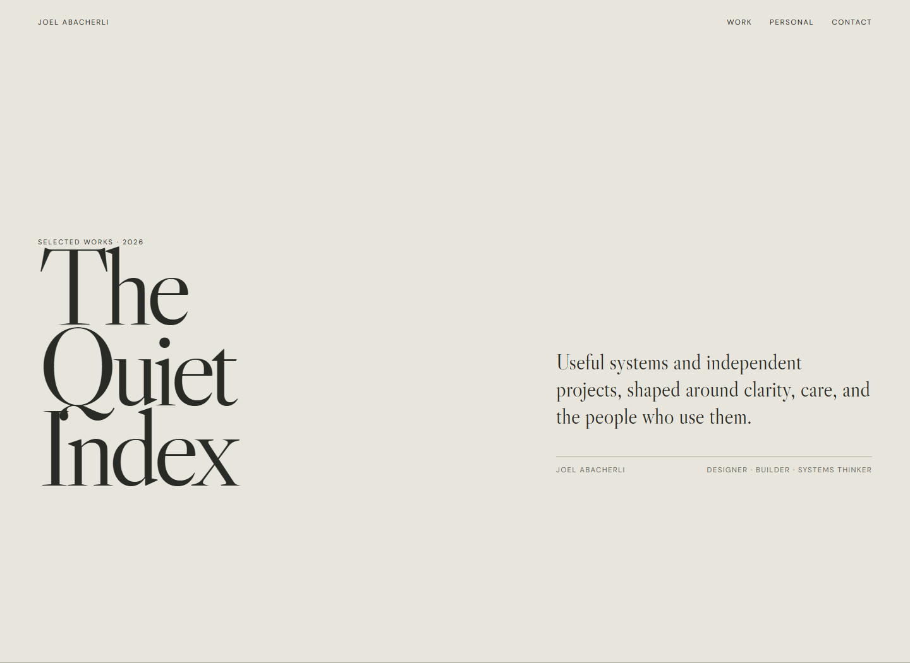

01
The Quiet Index
Muted stone, editorial serif, museum-catalog pacing, and large alternating case studies.
Same work, five completely different ways of seeing it. Two muted directions, two theatrical directions, and one technical bridge between them.
View current sketchbook version ↗